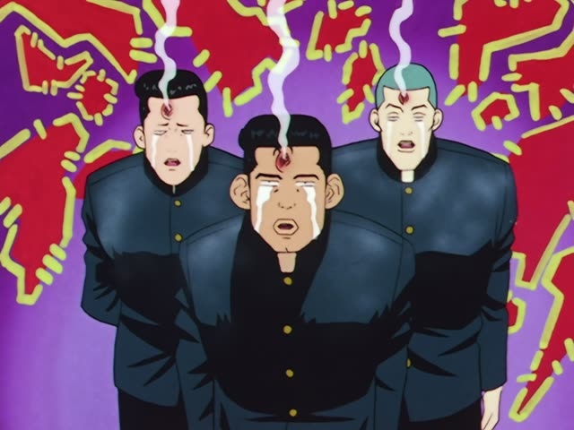

な-Adjective (Past)
| Polite | ～でした |
|---|---|
| Casual | ～だった |
Same meaning: "was". Only the politeness changes.
Kekkon Dekinai Otoko · Episode 12
どっちかというと嫌いでした。
"If anything, I disliked it."
To say how something was with a な-adjective, add だった right after it, no な: 嫌い → 嫌いだった. It works exactly like a noun: 学生だった.
On this card, she's asked how she felt about it back then. The sentence answers "How was it?": rather not liked. どっちかというと = "if anything".
Polite: でした, like on this card: 嫌いでした. Watch out: 嫌い ends in い but is a な-adjective, so never 嫌いかった.
1 Litre of Tears · Special
元気だった？
"Have you been well?"
だった is the casual でした. On this card, 元気 + だった = "were you well?", and the rising voice makes it a question.
Quick Examples
A friend asks how the new hotel was.
すごく静かだったよ。
"It was really quiet."
CasualA coworker asks about your move.
大変でした。
"It was tough."
PoliteYour friend asks if you still play the piano.
子どもの頃は好きだったけど…。
"I liked it as a kid, but…"
好き is a な-adjective too, so 好きだった.
CasualSomeone asks how the hotel location was.
駅の前で、便利でした。
"It was right by the station, so it was handy."
PoliteWith and without
元気だ。
"I'm fine." Right now.
元気だった。
"I was fine." Just add だった.
元気でした。
Same thing, polite.
綺麗かった。
かった is for い-adjectives (高い → 高かった). 綺麗 only looks like one.
Examples from Media
Last Samurai Standing · Episode 5
残念でした。
"Too bad."

Slam Dunk · Episode 8
駄目でした。
"It was no good."
Quartet · Episode 1
無理でした。
"It was no use."

Shirokuma Cafe · Episode 15
前からあなたの事が好きでした。
"I've liked you for a long time."
好き + でした, the polite past.
1 Litre of Tears · Episode 4
変だったよ。
"It was weird."
Dungeon Meshi · Episode 15
大変だったね。
"That must have been rough."
大変 ("tough, rough") + だった = "it was tough". ね: sharing the feeling, "that must have been rough".
Quartet · Episode 7
ずっと 幸せだったよ。
"I was always happy."
幸せ ("happy") + だった = "was happy". ずっと: "the whole time". よ: telling them plainly.

Shirokuma Cafe · Episode 49
ラマさん、残念だったね。
"Too bad, Llama."
残念 + だった, the casual past.
Further Reading
A Dictionary of Basic Japanese Grammar
Appendix 1, Basic Conjugations · pp. 580–581
Tae Kim's Guide to Japanese Grammar
Adjectives · The na-adjective
Polite Form and Verb Stems · Using 「です」 for everything else